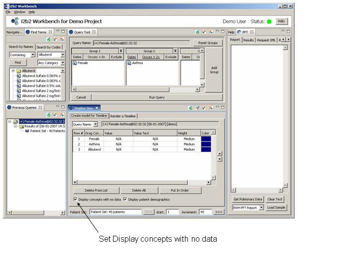

Refining a Previous Query
Suppose we want to refine a previous query and determine which patients were prescribed Albuterol.
-
Start by dragging our previous query into the Create model for Timeline tab.
-
Click on the Find Terms Search by Names tab, enter Albuterol and select 'Find'.
-
Drag the Albuterol folder into the Create model for Timeline tab.
Select Display concepts with no data.
This provides an 'Albuterol' label for all patients, even those that have not been prescribed it.
-
In order to view all patients in one timeline, set the increment field equal
to the total number of patients (40). Double click on the Timeline View tab to expand the timeline's viewing area
